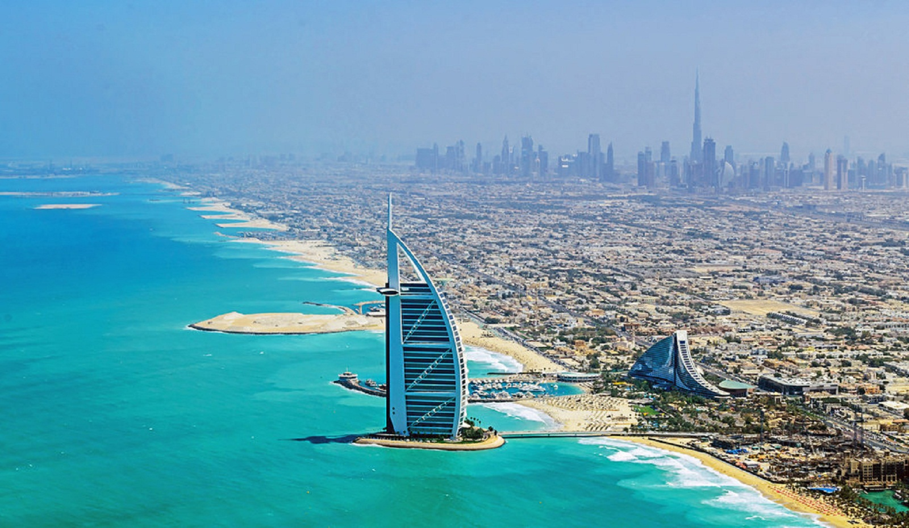

Nisip furtuna desert
 Actualitate Politic Business Sport Life Show Ziare si Reviste Stiri Locale COMUNITATE LOGIN/SIGNUPA nins in desertul Sahara (Foto&Video)
In ultimele saptamani vremea a fost neobisnuita in multe parti ale lumii, iar acum a venit randul desertului Sahara sa fie in atentie, dupa ce dunele de nisip au fost acoperite de zapada. Pentru a patra oara in 37 de ani in desertul Sahara a nins ...
09 Ianuarie 2018 1 comentariuNisip furtuna desert
A nins in desertul Sahara (Foto & Video)
A nins marti in desertul Sahara, iar zapada a rezistat o zi intreaga. Fotografii publicate pe Twitter din orasul algerian Ain Sefra, cunoscut ca "Poarta catre Desert", arata dune rosii de nisipi acoperite cu zapada. La Ain Sefra a nins ultima data pe 18 februarie 1979, dar atunci furtuna de zapada a durat doar o jumatate de ora. De aceasta data, zapada a rezistat o zi in orasul aflat la 1.000 de metri deasupra nivelului marii, inconjurat de Muntii Atlas...
21 Decembrie 2016 Alte articole despre: ninsoare desert Sahara , nins zapada desert Sahara , zapada Sahara videoSimboluri pline de mister descoperite in desert, vechi de cel putin 2.000 de ani
Simboluri mistice denumite geoglife au fost descoperite intr-un desert din Peru. Aceste figuri enigmatice sunt asemanatoare Liniilor Nazca si pot fi distinse doar de la mare inaltime, ele fiind zarite din avion de catre un cercetator peruan. Eduardo Herran Gomez de la Torre a descoperit noi simboluri uriase in timp ce zbura cu avionul deasupra dealurilor din Valea El Ingenio si Pampas de Jumana din Peru, potrivit The Independent. Vanturile puternice si furtunile de nisip au dezvaluit noi geoglife, nedescoperite anterior odata cu Liniile Nazca...
04 August 2014 Alte articole despre: simboluri mistice descoperite Peru , noi simboluri Liniile Nazca , descoperire simboluri mistice desertSituatie disperata in China: Desertul inainteaza spre Beijing
Zilnic, Beijingul este lovit de furtuni de nisip. Daca in urma cu doar cativa ani, acestea erau privite ca un fenomen de neluat in seama, acum statul planteaza milioane de pomi in fata extinctiei desertului. Cauza acestor fenomene este desertul Tianmo, care se gaseste la 90 de kilometri nord-vest de capitala chineza. Interesant este ca aceste furtuni nu reprezinta singura problema a locuitorilor din zona. Desertul inainteaza spre oras cu 4 metri pe an, iar regiunile uscate din jurul Beijingului devin din ce in ce mai ostile vietii...
17 Decembrie 2013 9 comentarii Alte articole despre: china beijing desert , beijing inghitit desertO furtuna de nisip a cuprins orasul american Phoenix (Video)
O furtuna de nisip violenta a avut loc, marti seara, in orasul Phoenix, capitala statului american Arizona, din sudul Statelor Unite, avariind retelele de electricitate si anuland mai multe zboruri, au anuntat autoritatile. Furtuna a fost insotita de rafale de vant cu viteze de pana la 96 de kilometri/ora. Specialistii din cadrul serviciului meteorologic national american au catalogat aceasta furtuna drept una "foarte importanta, istorica", fara a da mai multe detalii, noteaza Le Figaro. Din fericire nimeni nu a fost ranit, nicio casa din zona nu a fost avariata si nici infrastructura din Phoenix nu a avut de suferit. In schimb, orasul, situat in inima desertului, a fost invaluit in praf...
06 Iulie 2011 Alte articole despre: furtuna nisip stat Phoenix , furtuna rafale vantChinezii vor sa-si mute capitala, de frica desertului Gobi
Chinezii au un nou subiect in dezbatere publica: necesitatea de a muta capitala, din ce in ce mai asaltata de furtunile de nisip din desertul Gobi si afectata de lipsa acuta de apa. Problema a reaparut odata cu studiul intitulat "Raport privind transferarea capitalei Chinei", publicat de doi specialisti chinezi Qin Fazhang si Hu Xingdou, si comentat de Corriere della Sera , in editia sa de marti. "Beijing-ul si-a indeplinit misiunea istorica. A venit vremea pentru o noua capitala", sustin Qin Fazhang si Hu Xingdou...
14 Iulie 2010 16 comentarii Alte articole despre: mutare captala China , Beijing desertul GobiBeijing si Riad, afectate de furtuni uriase de nisip (Video)
Tone de nisip desertic au patruns sambata dimineata in Beijing, spulberate de o furtuna puternica, acoperind capitala Chinei cu o pulbere galben-portocalie. Autoritatile au avertizat populatia in privinta calitatii aerului, motiv pentru care putini locuitori ai orasului s-au incumetat sa mai iasa din case, acestia fiind nevoiti sa isi acopere fetele cu masti, informeaza Reuters. Nivelul de atentionare asupra calitatii aerului a fost ridicat la 5, situatie foarte rar intalnita. De asemenea, toti iubitorii sporturilor in aer liber au fost avertizati sa renunte in acest weekend si sa isi faca antrenamentele in interiorul cladirilor...
20 Martie 2010 Alte articole despre: furtuni nisip Beijing RiadAtena, acoperita de nisipul din Sahara
Atena, capitala Greciei, a fost ingropata sub un strat de nisip, sambata, in urma unei furtuni care a blocat lumina soarelui. Fenomenul a aparut din cauza furtunilor de nisip incepute in desertul Sahara, pe continentul african, relateaza Associated Press. De asemenea, nisipul a ajuns si in Peninsula Peloponeza si in Insulele Egeene, iar meteorologii au avertizat ca exista riscul unor probleme respiratorii. Nu este prima data cand un asemenea fenomen are loc in Grecia, insa, de obicei, acesta se petrece la sfarsitul primaverii...
21 Februarie 2010 Alte articole despre: furtuna nisip Atena , nisip Sahara AtenaO parte din nisipul Chinei a facut inconjurul lumii in 13 zile
Nisipul unei furtuni aparute in desertul Taklamakan, in vestul Chinei, a facut inconjurul lumii in 13 zile, potrivit unui studiu publicat luni in revista specializata Nature Geoscience. La 8 si 9 mai 2007, rafale de vant care suflau cu 36 km/h peste Taklamakan au ridicat circa 800.000 de tone de praf, potrivit calculelor realizate pe baza unor imagini din satelit si modele informatice. Praful a luat apoi altitudine in timp ce era impins de vant pe inaltimile platoului tibetan, atingand 5.000 de metri altitudine...
21 Iulie 2009 Alte articole despre: nisip desert China , nisip inconjurul lumii , nisip furtuna desert Horoscop Curs valutar Colaboratori Aplicatie mobil Fara reclama Personalitati Meteo Trafic Sondaje TV Ziare.com Widget Ziare.com BlogUrmareste pe
Urmareste stirile Ziare.com pe Facebook Actualitate Politic Business Sport Life Show Da click pe o publicatie si vezi in dreaptacele mai importante 3 stiri.
TOP 3 STIRI PRESA CENTRALA
Da click pe o publicatie si vezi in dreapta cele mai importante 3 stiri.
Adevarul R. Libera J. National Puterea Ziare.com BBC News CNN New York Times The Telegraph Le Monde La Stampa Al Jazeera Unimedia Iohannis, despre majorarea pensiilor: "Ceea ce a adoptat ieri Parlamentul, unde un PSD iresponsabil are inca majoritate, a impovarat bugetul pe anul viitor cu 6% din PIB" Presedintele Klaus Iohannis a declarat, referitor la majorarea punctului de pensie si a salariilor profesorilor, ca pentru a avea loc aceste...VIDEO Presedintele Klaus Iohannis: "Este foarte putin probabil sa mai revenim la starea de urgenta" Presedintele Klaus Iohannis sustine miercuri, de la ora 18.00, o conferinta de presa la Palatul Cotroceni. UPDATE In prima parte, presedintele...
Haosul de pe podul Ciurel: La nici o saptamana de la inaugurare, Primaria Capitalei cauta alte solutii pentru a fluidiza traficul in zona Brigada Rutiera a Politiei Romane a transmis, la solicitarea Ziare.com, ca administratia publica locala cauta solutii pentru a rezolva aglomeratia... Vezi toate publicatiile Top stiri din Actualitate
Un mafiot roman, condamnat la 19 ani de inchisoare in Italia, va fi adus "acasa" pentru executarea pedepsei Iohannis, despre majorarea pensiilor: "Ceea ce a adoptat ieri Parlamentul, unde un PSD iresponsabil are inca majoritate, a impovarat bugetul pe anul viitor cu 6% din PIB" VIDEO Livada de cannabis. Plantele confiscate de politie, in urma unor descinderi in Mures si Cluj, aratau ca niste copacei. Mai multi traficanti au fost retinuti VIDEO Presedintele Klaus Iohannis: "Este foarte putin probabil sa mai revenim la starea de urgenta" VIDEO Cum erau branduite hainele "de firma" si parfumurile "de lux" cu ajutorul unei imprimante. Politia i-a prins pe "designeri" Avionul Su-30 care s-a prabusit in Rusia ar fi fost doborat accidental de un Su-35 Toate stirile din Actualitate
PERSONALITATI
Klaus Iohannis | Liviu Dragnea | Dacian Ciolos | Laura Codruta Kovesi | Tudorel Toader | Eugen Orlando Teodorovici | Victor Ponta | Traian Basescu | Lia Olguta Vasilescu | Gabriela Firea | Calin Popescu Tariceanu | Carmen Dan | Donald Trump | Mircea Hava | Paul Stanescu | Gheorghe Falca | Dan MotreanuRECOMANDARI
Actualitate: Alexandru Lazar | Stiri | Social | International | Diaspora | Europa | Scoala | Media | Cultura | Pensii | Personalitati | Au reusit in afaceri | Cuvintele dor | Elite fara granite | Flori de colt | Mandru ca sunt roman | Microsoft Office 365 | Outside the box | Romani in lume | Viitorul nostru altfel Politic: Viorica Dancila | Opinii | Barfa Politica | Alegeri | Politica Business: Dan Diaconescu | Afaceri | Bani | Preturi | Taxe | Impozite | Locuri de munca | Casa | Auto | Internet si Tehnologie | Fonduri | Economie | Mediu Sport: Steaua | Fotbal | Champions League | Europa League | World Cup | Campionate europene | Transferuri | Tenis | Handbal | Formula 1 | Sporturi | Olimpiada | EURO 2016 Life Show: Gateste cu suflet | Coltul animalelor | Viata sanatoasa | Life style | Shopping | Weekend | Vacante | Sex | Magazin | Vedete | Muzica | Funny | Horoscop Copyright © 2020 Ziare.comTermeni si conditii | Confidentialitate | Cookie | Codul jurnalistului CONTACT Platforma pentru solutionarea online a litigiilor ×
Aboneaza-te la notificarile Breaking News Ziare.com:
Vei primi primul ultimele stiri Notificari in timp real din Romania si strainatate Interviuri exclusive Ok, ma abonez!Pentru a va abona la notificarile Breaking News apasati butonul de sus Allow sau Permite